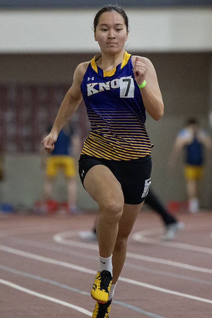
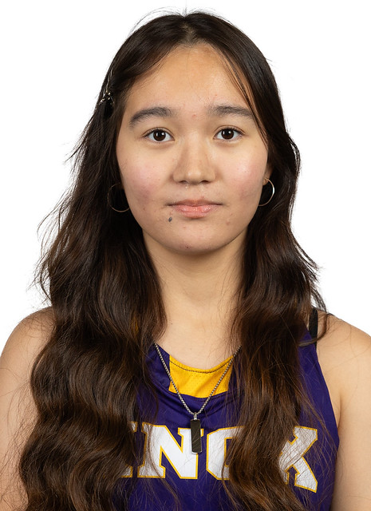

Hi, I'm Altynai Ruslanova ✨
Reliable, compassionate, and quick-learning student with a strong sense of responsibility.


Education
Bachelor of Science: Computer Science & Biology
Knox College, Galesburg, IL | 2024 - June 2028
Honors: Dean's List
Student Experience
Volunteer
Interact Club of Bishkek, Kyrgyzstan | 2022 - June 2024
Co-led 5 charity competitions, organized 3 clean-up events (50+ participants each), and delivered ecology lectures in schools.
Peer Tutor
School number 67, Bishkek, Kyrgyzstan | 2022 - May 2024
Supported learning in large classrooms and one-on-one sessions in Computer Science and Mathematics examinations.
Research Participant
University of Chicago, PIMCO Decision Research Lab | March-July 2025
Participated in behavioral research studies on decision-making.
Track and Field Athlete
Knox College | Jan 2025 - Present
Compete as a sprint runner in both indoor and outdoor collegiate events (60m, 100m, 200m).



Professional Development
Banking Operations Intern
MBANK, Bishkek, Kyrgyzstan | June-August 2023
Greet and assist customers, support with filing and organizing documents, assist in preparing promotional materials.
Substitute Teacher
School number 67, Bishkek, Kyrgyzstan | 2022 - June 2024
Led English and Algebra classes of up to 43 students; designed games and activities for learning.
Delivery Courier
Glovo, Bishkek, Kyrgyzstan | 2023 - July 2024
Maintained a 4.87/5.00 customer rating for punctuality, communication, and service.
Home Renovation Assistant
Bishkek, Kyrgyzstan | 2019 - 2021
Assisted in home renovations: wall art, wallpapering, surface painting, appliance repair.
Photographer Assistant
Real Image Corporation, Bishkek, Kyrgyzstan | 2023 - 2024
Sold 75-90 photo frames daily, assisted with studio upkeep, provided enhanced photos.
Skills
Contact
Phone: (929)-454-4343
Email: aruslanova@knox.edu